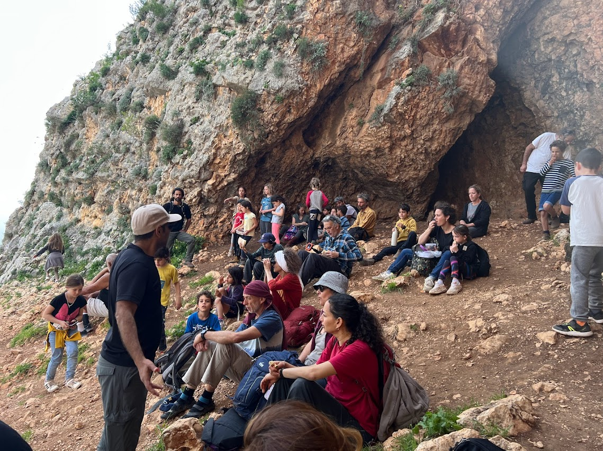
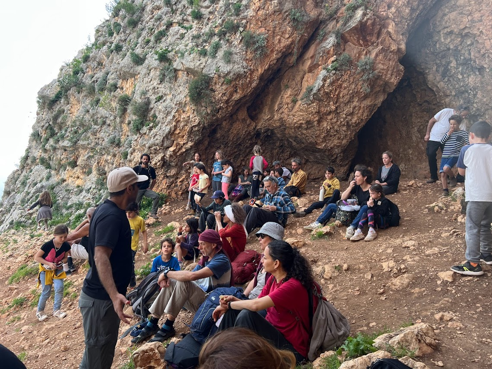

אמר האדם הפוקח עיניו:
עושרו של עולם מה נפלא ומה רב- בוקר בוקר נלכד בלבי כברשת העולם ומלואו, המצולה היבשת, ואורות וצללים וחגים וחולין, ומילים וצלילים ושדות שיבולים וכל צבעי הקשתלאה גולדברג
התפיסה החינוכית מבוססת על עשייה מגוונת בהתאם לשלבי ההתפתחות של הילד. תחומי הלימוד השונים כמו קריאה, חשבון, שפות, גאוגרפיה, היסטוריה ועוד נלמדים דרך אמנות, סיפורת, יצירה פעילות גופנית וקרבה לטבע. אלו מאפשרים חקירה ועומק לתוך נפשם של הילדים, ותומכים בהתפתחותם כאנשים שמחים, יצירתיים, עצמאיים ובעלי יכולת להגשמה עצמית, ותורמים לחברה.
הצטרפו אל הקסם הייחודי של קהילת משפחות בית המעיין

מערכת שעות שבועית בכיתה ג׳
לימוד תקופה "אדם- חיה" על הקשר בין בעלי חיים לאדם
אירוע שנתי באולימפיאדה לכיתות ה׳

רישום במחברת לימוד- תקופת אנטומיה בכיתה ח

שיעורי אמנות לכיתה ה

מסורת טקס טו בשבט במצוק נחל עמוד
יום בשבוע יוצאים ליער מכירים את הסביבה, מתחברים, סקרנות, פליאה
הצגת סיום כיתה ח׳
חוגגים ומציינים את מועדי ישראל
גני בית המעיין הם גנים סביבתיים ברוח ולדורף, בהם העשייה החינוכית מכוונת לאפשר התפתחות הרמונית של הילד- בגופו, נפשו ורוחו. אנו שואפות לשמר את הקסם והפשטות של הילדות, הסקרנות ויראת הכבוד, הפליאה מכל רגע ולעודד את רגש האחדות עם העולם. אנו דואגות לסביבה הרמונית ומאוזנת, טבעית, נעימה ובטוחה אשר מאפשרת לילד להיות פנוי לשחק, להתנסות ולחקור, לגדול ולהיות חופשי ופעיל בעולם. בגנים אנו מרבות לעסוק במלאכות הבית והגינה, במלאכות הטבע והעונה, באפייה, ציור, תפירה, ליבוד, ועוד… כאשר הילדים לוקחים חלק פעיל ומשמעותי לצד המשחק החופשי, המהווה את מרכז עולמם בגן. הגן עטוף באור נעים ומחמם, צלילי שירה ונגינה, והחשוב מכל- חום ואהבה. נשות הצוות שלנו בעלות הכשרה אקדמאית/ אנתרפוסופית, מנוסות ומסורות לעבודתן. התזונה בגן טבעונית וכוללת ארוחת צהריים חמה. הגן פועל 5 ימים בשבוע 8-14, ובימי שישי.
בית ספר יסודי ברוח חינוך ודורף מושתת על הדרך ללמוד את העולם סביבנו בצורה חוויתית, מלאת רגש ויצירתיות המותאמת להתפתחות הילד כפי שפיתחה הגישה האנתרופוסופית. הגישה האנתרופוסופית שלבי ההתפתחות של האדם מחולקים לפי שביעונים.
בית הספר היסודי מלווה את הילד בשביעון השני של חייו- גילאי 7-14. בשנים אלו, מופנית האנרגיה של הילד לפיתוח כוחות פנימיים, מה שיספק לו כוחות חיים מתוכו הוא לכל חייו. בנוסף לבנייה ואחזקת הגוף הפיזי, מתייחסים לכוחות שחשיבותם בעיצוב יכולת החשיבה, זיכרון ופעולות מנטליות נוספות. בשנים אלו מתפתחים נטיות והרגלים המלווים את הילד בהמשך חייו, וכן מתפתחים המצפון, קווי האופי והמזג.
בשנים 12-14 בחייו של הילד, מתרחש מהפך בחיי הילד. מתעוררים כוחות חזקים של חשיבה מופשטת, שיפוט ערכי, הבנה בוגרת של המציאות ואידיאליים חברתיים ואקולוגיים. גם היכולות הגופניות מבשילות לעבודה תואמת את צרכי הסביבה. התפתחות זו מוצאת את תשובתה בתהליכי למידה יותר מופשטים, מלאי עניין ורב תחומיים. כמחנכים, הכוונה להובילם לכך שיצרו קשר של הבנה ועניין בעולם. בשלב זה מביאים את האמנויות השונות לרמה מקצועית. תהליכי אומנות אלו מגיעים לשיא מסוים בפרויקטים משותפים רב תחומיים- הצגות, עבודות חקר, מייצגים הקשורים לתקופות לימוד שונות.
בחינוך ולדורף נהוג ללמד את נושאי הלימוד העיקריים בתקופות המתחלפות בריתמוס מסוים (בין 3- 4 שבועות). לימוד תקופה מתרחש בשעתיים הראשונות של הבוקר (שיעור ראשי), והוא מורכב מפעילויות רב תחומיות.
התפתחות עולם הרגש והחוויה של הילד היא המוקד אליו מכוון המאמץ החינוכי. ככל שעולם זה עשיר יותר, מגוון, מלא ריחות, טעמים, תמונות כך יהיה עולמו הפנימי כמבוגר עשיר ומלא. האמצעי שפונה בצורה היפה והשלמה ביותר לנפש הילד בגיל זה היא האמנות.
בית המעיין שם כערך את החיבור ההוליסטי בין ערכי חינוך ולדורף ושהייה בטבע. כל מה שקורה במרחבי החוץ ניתן לחבר ביצירתיות והקשבה עמוקה לנפש הילד, כך שהפעילות והשהייה בחוץ תתאים לכל שלב בו הם נמצאים ולתקופות הלימוד אותם לומדים.

אירוע חינוכי, חברתי ואמנותי המביא לשיא את הפעילות החינוכית של בית הספר. ההצגה היא ציון דרך, מעין חניכה עבור הכיתה, התלמידים והמחנך.
לימוד שפות זרות מתחיל בכיתה א' (אנגלית וערבית) מתוך תפיסה כי רכישת שפה זרה היא דרך להיכנס לעולמו של האחר. בשלב הראשון
דמות המחנך והמורה הוא ציר מרכזי בחיי התלמידים וההורים. המחנך פוגש את הכיתה כל בוקר לשיעור התקופה ומלווה את הכיתה לאורך כל היום בשנים הראשונות. קיימת חשיבות ודגש מיוחד על הקשר בין מחנך הכיתה והילדים.
בבית במעיין אנו נוהגים לחגוג יחד את חגי השנה ומפגשים נוספים לאורך השנה. לכל חג ומועד צביון ואופי משלו. המשותף לכולם שכל כיתה מביאה פרי עשייתה מתוך אותה תקופה.
כאשר הילד עסוק במלאכה כלשהי תודעתו "רדומה". הוא נתון כל כולו בתוך העשייה, במצב שפועלים בו אינסטינקטים לא מודעים. הוא פועל באמצעות כוח פיזי, פעולות השרירים, כוחות עיצוב וכוחות נפשיים של התלהבות, שמחה, פליאה וחדוות עשייה, הממלאת אותו בחיים מלאי מרץ וחיוניות.
השותפים הישירים להווית החיים הבית ספרית הם הילדים-המורים-ההורים! דבר חשוב ובסיסי הוא הכרת עקרונות חינוך ולדורף והסכמה עם הדרך החינוכית על פיה פועל בית הספר. את האיכויות העמוקות שהדרך החינוכית רוצה לבסס, אפשר ליצור רק במשותף בין כל הגורמים המעורבים בחיי הילד!
 

העמותה הוקמה על ידי גרעין של תושבים בקיבוץ חוקוק, השוכן בצפון הכנרת- מועצה אזורית עמק הירדן. העמותה עוסקת בפעילות הערכית חינוכית ותומכת בכלל הפעילות של בית המעיין-בית חינוך סביבתי קהילתי ברוח ולדורף. בראשיתו, הוקם בית המעיין כיוזמה של הורים ועם השנים צמח לבית חינוך ייחודי על אזורי ומוכר על ידי משרד החינוך. חברי העמותה, קהילת המשפחות של בית המעיין , מגיעים מקיבוץ חוקוק, ישובי צפון הכנרת, מועצה אזורית עמק הירדן והסביבה. התפיסה החינוכית מבוססת על חינוך סביבתי, קרוב לטבע, קהילתי בשותפות ותמיכה ביוזמות של ההורים וחינוך ולדורף (אנתרופוסופיה) אשר מוביל צוות בית הספר. בית המעיין צומח וגדל, ומספר שנים ילדינו הבוגרים משתלבים בתיכון האזורי במועצה עמק הירדן ולתיכונים נוספים בסביבה.
העמותה פועלת לפיתוח וקידום משכן הקבע לקרית חינוך יסודי ותיכון המבוססת על חינוך ברוח ולדורף, סביבה ואמנויות בסביבת המועצה האזורית עמק הירדן וסביב הכנרת. אנו מזמינים אתכם להצטרף לקהילת בית המעיין ולהיות חלק מהקסם הנפלא שכבר למעלה מ 15 שנים פועם בצפון עמק הירדן!!
כל חינוך הוא חינוך עצמי, ואנו כמחנכים מהווים רק את סביבתו של הילד המחנך את עצמו. עלינו ליצור את הסביבה המתאימה כך שהילד יוכל לחנך את עצמו על ידינו, כפי שעליו לחנך את עצמו מתוך גורלו ויעודו הפנימיים
שטיינר, 20.4.1923